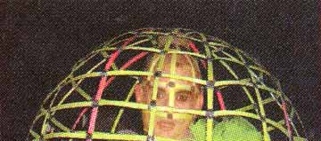
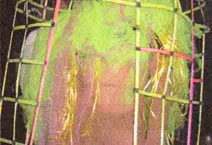

Dunst i Ungeren, Pabladet, Copenhagen. |
 |
 |
 |
| Midt i november rykkede dunst ud af lokalerne på Vesterbro og tog
til Ungdomshuset på Jagtvej 69, hvor homoer, transer og det løse
spyttede i bøssen. Festen "Le Freak Queer Side Show" var
nemlig dunsternes måde at kradse penge ind på til de næste
måneders husleje. Det lykkedes. En tarotspåkone, Puta og Johnny Warehouse i tisseshow, aktivister fra ungeren, Guxina Blasfemica's bibliotekarbitch og en masse andre frivillige skabte et mageløst misfoster af en fest. lef/drud |